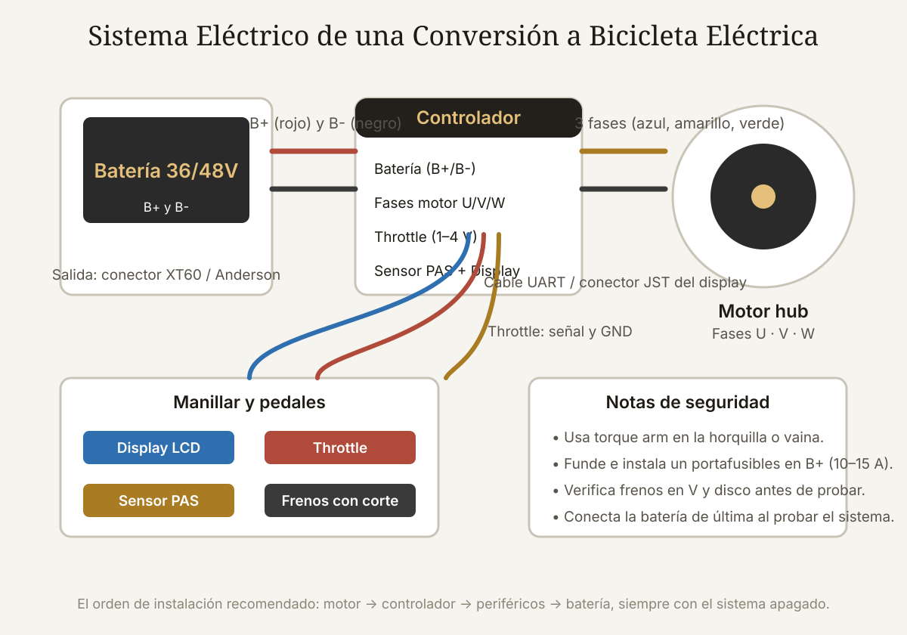

Qué cubre esta guía
- ¿Vale la pena convertir? Costos y alternativas
- Tipos de kit: hub delantero, hub trasero o motor central
- Potencia: 250W, 500W o 750W y la ley
- Elegir la bicicleta base
- Componentes del kit explicados
- Paso 1: instalar la rueda con motor
- Paso 2: montar el controlador y la pantalla
- Paso 3: pedal asistido y acelerador
- Paso 4: instalar y conectar la batería
- Paso 5: revisión y primera prueba
- Normativa y trámites
- Seguridad: frenos, torque arms y litio
- Mantenimiento de la bicicleta convertida
- Conclusión
- Preguntas frecuentes
¿Vale la pena convertir? Costos y alternativas
Convertir una bicicleta que ya tienes es, casi siempre, más barato que comprar una e-bike equivalente, pero no es automáticamente la mejor decisión. La comparación honesta:
| Opción | Precio orientativo | Ventajas | Desventajas |
|---|---|---|---|
| Kit hub 250W (sin batería) | 120–200 USD | Instalación sencilla, conserva tu bicicleta | Necesitas batería aparte (100–250 USD más) |
| Kit hub 500–750W completo | 250–450 USD | Todo incluido, buena potencia | Peso extra en la rueda; revisa la ley |
| Kit motor central Bafang BBS02 | 450–700 USD | Par natural en el pedalier, mejor reparto de peso | Instalación más compleja (eje de pedalier) |
| E-bike nueva de entrada | 700–1.500 USD | Garantía, integración, sin trabajo de taller | No reutiliza tu bicicleta |
La conversión rinde especialmente si: ya tienes una bicicleta en buen estado (cuadro, ruedas y frenos sanos), quieres una configuración a medida (batería grande, motor de tu elección) o disfrutas del taller. Si tu bicicleta tiene frenos de zapata gastados, suspensión destartalada o un cuadro muy antiguo, el costo de ponerla al día puede acercarse al de una e-bike nueva — y entonces conviene partir de cero.
Tipos de kit: hub delantero, hub trasero o motor central
Tres arquitecturas dominan el mercado de conversiones:
Motor hub delantero. La rueda delantera se reemplaza por una con el motor dentro. Es la instalación más simple (no hay cadena ni cambios que tocar) y la más barata. Contras: tracción limitada en pendientes y terreno suelto (la rueda motriz patina), y la dirección se vuelve más pesada porque el motor añade masa al manillar. Adecuado para ciudad plana y velocidad moderada.
Motor hub trasero. La rueda trasera lleva el motor: mejor tracción, reparto de peso más equilibrado y se siente como una e-bike convencional. Contras: la instalación debe respetar el desviador trasero y la cadena, y cambiar una rueda trasera con pinchazo es más trabajo. Es la opción más popular para uso diario.
Motor central (mid-drive). El motor va en el pedalier y empuja a través de la transmisión existente, aprovechando los cambios de la bicicleta. Sube pendientes con más eficiencia y deja las ruedas originales. Contras: es el doble de caro, el desgaste de cadena y cassette se acelera, y la instalación requiere extraer el eje de pedalier con herramientas especiales. Es la elección de los entusiastas del ciclismo y de terrenos con pendientes fuertes.
Potencia: 250W, 500W o 750W y la ley
La potencia del motor define la velocidad, el consumo de batería y, sobre todo, el marco legal. En Chile, la Ley de Tránsito (Ley 18.290, modificada por la Ley 21.377) clasifica como bicicleta — sin patente ni permiso de circulación — a los ciclos con asistencia eléctrica de hasta 250 W que dejan de asistir al superar 25 km/h. Los vehículos que superan esos límites se consideran ciclomotores, con requisitos adicionales.
| Motor | Velocidad máxima típica | Uso recomendado | Marco legal (Chile) |
|---|---|---|---|
| 250W hub | 25–32 km/h | Ciudad, uso diario | Bicicleta asistida (sin requisitos adicionales) |
| 500W hub | 35–40 km/h | Cerros suaves, reparto | Zona gris; puede exigir trámites de ciclomotor |
| 750W hub/central | 40–45 km/h | Pendientes fuertes, uso off-road | Probablemente ciclomotor; verifica la normativa local |
Elegir la bicicleta base
La bicicleta que conviertes es tan importante como el kit. Antes de comprar nada, revisa:
- Frenos: deben estar impecables. Con 25–30 km/h, los frenos de zapata de calidad son suficientes; los frenos de disco (mecánicos o hidráulicos) dan margen extra. Una bicicleta eléctrica con malos frenos es un peligro real.
- Cuadro: busca espacio en el triángulo delantero o en el portaequipajes para la batería, y orificios de montaje o espacio para abrazaderas.
- Ruedas y radios: para un motor hub, la rueda original debe estar recta y los radios sanos; los kits vienen con la rueda completa armada, pero la rueda delantera que se queda debe aguantar el peso extra del motor opuesto.
- Transmisión: para motor hub trasero, un cassette o piñón en buen estado; para motor central, una cadena nueva y cassette sano (el motor los exigirá más).
- Suspensión: una horquilla con recorrido corto basta; la suspensión barata añade peso y flexión sin beneficio.
La regla simple: convierte una bicicleta que ya circularía bien sin motor. El motor no arregla una bicicleta mala; la hace más pesada y más rápida con los mismos problemas.
Componentes del kit explicados
Un kit completo de conversión incluye (varía según el vendedor):
- Rueda con motor: motor hub cableado con 3 fases y 5 cables de sensor Hall, o motor central listo para pedalier.
- Controlador: caja sellada con conectores; gestiona el motor, la batería y los controles. Los controladores más comunes usan protocolo KT o Lishui.
- Pantalla/display: LCD o LED con controles de nivel de asistencia, luces y modo de paseo. El estándar de facto es el conector Julet de 5 pines.
- Throttle (acelerador): giro de puño o palanca; entrega potencia sin pedalear. Su legalidad varía por país.
- Sensor de pedal asistido (PAS): disco con imanes y sensor que detecta cuándo pedaleas y con qué fuerza (torque sensor en kits caros).
- Batería: pack Li-ion 36V o 48V con BMS, en soporte de cuadro o portaequipajes; con conector XT60/Anderson y llave de encendido.
- Frenos con corte: manetas que interrumpen el motor al frenar (obligatorio por seguridad; algunos kits incluyen sensores de freno hidráulico aparte).
Antes de instalarlo, prueba el kit sobre una mesa (motor apoyado sin carga, conecta todo según el manual y verifica que el motor gire con el display encendido). Detectar un kit defectuoso antes de montarlo ahorra horas de desarme.
Paso 1: instalar la rueda con motor
El orden de trabajo recomendado para un kit hub:
- Levanta la bicicleta y retira la rueda original que reemplazarás. Guarda las tuercas y arandelas: las del kit pueden diferir.
- Verifica el ancho de horquilla/vaina contra el ancho del eje del motor (100 mm delantero, 135–142 mm trasero). Si no entra, no fuerces: el cuadro se puede partir.
- Coloca el torque arm (ver sección de seguridad) en el lado de salida de cables, ANTES de apretar la rueda.
- Instala la rueda cuidando que el cable del motor salga por el lado correcto y que el disco de freno (si lleva) entre en su pinza.
- Aprieta las tuercas en cruz y con torque adecuado (aprox. 25–35 N·m para ejes de 10 mm); una rueda de motor floja se gira y corta los cables del sensor Hall.
- Gira la rueda a mano y verifica que no roce con nada y que gire libre.
Paso 2: montar el controlador y la pantalla
El controlador es una caja de unos 15×8×4 cm que se monta típicamente dentro del triángulo del cuadro, en el portaequipajes o bajo el tubo del sillín. Reglas de montaje:
- Lugar firme y ventilado: el controlador disipa calor; no lo envuelvas en bolsas ni lo metas dentro del tubo.
- Conexión en seco primero: conecta motor (fases y Hall), pantalla, throttle, PAS y frenos según el manual del kit antes de fijarlo; verifica que todo funcione sobre un soporte.
- Polaridad de la batería: los conectores del controlador suelen ser diferentes para B+ y B− (XT60 con colores y muescas). NUNCA inviertas la polaridad: un controlador mal conectado muere en milisegundos.
- Pasa los cables por el interior del cuadro o con canaletas por el tubo inferior, dejando holgura en la dirección para no tensarlos al girar.
La pantalla va en el manillar central con su soporte, y su cable baja por el cableado de frenos hasta el controlador. La mayoría de las pantallas KT muestran nivel de asistencia (PAS 0–5), velocidad, batería, odómetro y código de error — la tabla de errores del manual es tu herramienta de diagnóstico más valiosa.
Paso 3: pedal asistido y acelerador
El sensor de pedal asistido (PAS) se monta en el eje del pedalier:
- Retira la biela izquierda (lado sin platos).
- Desliza el disco PAS (con 8–12 imanes) sobre el eje, alineado con el orificio de la rosca del eje si lo tiene.
- Monta el sensor sobre el tubo del pedalier (soporte atornillado o abrazadera), con la cara de detección a 2–4 mm de los imanes.
- Vuelve a montar la biela. Gira el eje: el LED del sensor (si tiene) debe parpadear al pasar los imanes.
El throttle reemplaza o complementa la empuñadura derecha (o va como palanca cerca del pulgar). Su cable llega al controlador; en la configuración estándar, con PAS en 0 el throttle da potencia a baja velocidad (modo paseo), y con PAS activo suma potencia al pedaleo. Si tu país restringe el throttle, el kit se puede configurar para que solo responda pedalando.
Paso 4: instalar y conectar la batería
La batería es el componente más caro y el más delicado. Recomendaciones de instalación:
- Ubicación: el soporte en el tubo del cuadro es el estándar (centro de gravedad bajo y seguro). Los soportes de portaequipajes suman peso atrás y afectan el manejo. Evita mochilas con la batería suelta.
- Fijación: los soportes de batería usan llave o correa; verifica que la batería no se mueva con baches (una batería que golpea el cuadro puede romper el soporte o dañar el BMS).
- Fusible: instala un portafusibles en el cable B+ de la batería o usa el fusible que trae el kit (10–15 A para 250W, 20–30 A para 750W). Un fusible puede salvar la batería ante un cortocircuito.
- Conectores: XT60/XT90 o Anderson con buena conexión; los conectores sueltos se calientan y funden. La batería se conecta SIEMPRE de último, con el sistema apagado.
- Carga: usa el cargador original; carga en superficie no inflamable, sin dejarla cargando toda la noche desatendida, y guarda la batería entre 30–80 % si no la usarás por semanas.
Paso 5: revisión y primera prueba
Antes de la primera salida, completa esta lista de verificación:
- Ruedas: torque de tuercas verificado, radios sin daño visible, frenos funcionando con el corte de motor activado.
- Cables: todos los conectores asentados, sin cables que puedan engancharse en ruedas o cadena.
- Batería: fija, con fusible, carga al menos al 50 %.
- Display: enciende, muestra voltaje correcto (36V/48V según pack) y sin códigos de error.
- Prueba estática: motor sin carga (rueda levantada) en PAS 1 y 2; verifica respuesta suave y sin ruidos raros.
La primera salida real: 2–3 km en terreno plano, con casco, en PAS bajo, prestando atención a cómo se siente el manejo (más peso, dirección más pesada en kits delanteros) y a la temperatura del controlador al volver. Si todo va bien, aumenta progresivamente la asistencia y la distancia. Esta curva gradual detecta instalaciones defectuosas antes de que se conviertan en fallas en plena calle.
Normativa y trámites
En Chile, la Ley 21.377 (que modifica la Ley de Tránsito) reguló los ciclos eléctricos. En términos prácticos: una bicicleta con motor de hasta 250W y asistencia que se corta a 25 km/h se trata como bicicleta (casco obligatorio, circular por ciclovías y calzada, sin patente). Sobre esos límites, el vehículo se clasifica como ciclomotor o motocicleta según el caso, lo que implica licencia, permiso de circulación, seguros y revisión técnica.
Además, verifica las reglas locales de tu comuna: algunas restringen los ciclos eléctricos en ciclovías o exigen elementos reflectantes. La SEC (Superintendencia de Electricidad y Combustibles) no certifica bicicletas eléctricas como vehículos de consumo masivo aún, así que la responsabilidad de la conversión (calidad del kit, batería con certificaciones CE/UN38.3) recae en ti como constructor.
Seguridad: frenos, torque arms y litio
Los tres riesgos reales de una conversión, en orden de gravedad:
1. Falla mecánica de la rueda con motor. El par de un motor hub puede girar el eje dentro de la vaina si no está bloqueado, cortando los cables del motor o del sensor Hall en plena marcha. El torque arm (una pieza de acero que ancla el eje al cuadro) es obligatorio en la práctica: los kits baratos no lo incluyen y muchos vendedores lo venden aparte. No circules sin él.
2. Freno insuficiente. A 30 km/h con 20 kg extra de motor y batería, la distancia de frenado crece. Si tu bicicleta tiene frenos de zapata, cámbialos por zapatas nuevas de calidad; considera frenos de disco si el cuadro lo permite.
3. Batería de litio. El incendio de baterías Li-ion viene casi siempre de celdas de mala calidad, BMS ausente o daño mecánico. Compra baterías de marcas conocidas con BMS y certificación (UN38.3 para transporte), nunca baterías "rearmadas" sin marca, y revisa mensualmente el estado del pack (hinchazón, calor anómalo, conectores).
Mantenimiento de la bicicleta convertida
Una conversión bien hecha exige poco mantenimiento, pero es implacable con el descuido:
- Mensual: torque de las ruedas y del soporte de batería, estado de conectores (limpieza con contact cleaner si hay corrosión), presión de neumáticos y revisión visual de frenos.
- Cada 500–1.000 km: en kits hub, revisar radios (los de la rueda motor trabajan más), en kits centrales, cadena y cassette (se desgastan 2–3× más rápido).
- Batería: ciclo profundo de calibración cada 2–3 meses (descargar al 20 % y cargar completa); guardar en lugar seco y fresco en invierno.
- Limpieza: el controlador y los conectores odian el agua a presión: lava con esponja, no con hidrolavadora, y revisa las entradas de cable después de lluvias fuertes.
Conclusión
Convertir tu bicicleta en eléctrica es el proyecto de movilidad con mejor relación esfuerzo/beneficio del mundo maker: un fin de semana de taller y un presupuesto de 300–500 USD te dan un vehículo diario que sube cerros sin sudar y llega más rápido al trabajo, reutilizando una bicicleta que de otro modo quedaría en el patio.
El éxito depende de cuatro decisiones tomadas con calma: el tipo de kit según tu terreno, la potencia dentro del marco legal, una bicicleta base sana y —por encima de todo— el respeto a las reglas de seguridad que se repiten en esta guía: torque arm, frenos impecables, fusible y una batería de calidad certificada. Con eso, la conversión no solo funciona: dura años.
Preguntas frecuentes
¿Qué kit es mejor para empezar: hub delantero, trasero o central?
Para la mayoría de las personas, un motor hub trasero de 250W es el punto de partida ideal: mejor tracción que el delantero, instalación mucho más simple que el central y precio contenido. El hub delantero conviene solo para ciudad muy plana y presupuesto mínimo. El motor central (Bafang BBS02, por ejemplo) es superior en pendientes y sensación de manejo, pero cuesta el doble, exige herramientas de pedalier y desgasta la transmisión más rápido.
¿Cuánto cuesta convertir una bicicleta en eléctrica en Chile?
Un kit hub de 250W con batería de 36V se consigue por unos 350–500 USD en total (kit 150–250 USD + batería 200–300 USD según capacidad). Un kit completo de 500–750W con batería 48V ronda los 400–700 USD, y un motor central Bafang BBS02 con batería puede llegar a 800–1.100 USD. A eso se suman el torque arm, herramientas y, si aplica, mejoras de frenos. Comparado con una e-bike nueva de 800–1.500 USD, la conversión sigue siendo la opción económica, sobre todo si ya tienes la bicicleta.
¿Necesito licencia, patente o permiso de circulación para una bicicleta eléctrica?
Si tu conversión cumple los límites de bicicleta asistida (motor de hasta 250W y asistencia que se corta a 25 km/h), en Chile se trata como bicicleta: no requiere patente, permiso de circulación ni licencia, y el casco es obligatorio. Si el motor supera esos límites, el vehículo se reclasifica como ciclomotor, con requisitos de licencia y permisos. La normativa se modifica periódicamente y la interpretación varía por comuna: verifica la regla vigente antes de comprar un kit más potente.
¿Puedo usar una batería de 48V con un motor de 250W?
Técnicamente algunos controladores de 250W aceptan 36V y 48V, pero no es recomendable: el motor de 250W está diseñado para la corriente y voltaje de 36V, y alimentarlo a 48V aumenta la velocidad y la potencia real (por encima del límite legal y del diseño térmico del motor), acortando su vida. Si quieres más potencia, compra un motor de 500W+ con su controlador y batería 48V adecuados, asumiendo las implicancias legales que eso conlleva.
¿Cuánto dura la batería y qué autonomía tendré?
La autonomía se estima con la capacidad en Wh (voltaje × Ah): una batería de 36V/10Ah son 360 Wh, que con un motor de 250W a asistencia media rinde unos 35–45 km planos; una de 48V/14Ah (672 Wh) alcanza los 60–80 km en las mismas condiciones. El consumo real depende de tu peso, pendientes, viento, nivel de asistencia y presión de neumáticos. La vida útil de la batería se mide en ciclos: las de celdas de calidad (Samsung, LG, Panasonic) duran 500–800 ciclos antes de caer al 80 % de capacidad, unos 3–5 años de uso diario.
Este artículo es contenido editorial independiente: no contiene ubicaciones patrocinadas ni enlaces de afiliado. Si en futuras actualizaciones se agregan enlaces a proveedores de componentes, serán identificados explícitamente. El código y las conexiones son referenciales y deben adaptarse y probarse con tu propio hardware. Si detectas un error en esta guía, por favor avísanos.
Sigue aprendiendo
Antes de comprar la batería, aprende a distinguir celdas de calidad en LiFePO4 Grado A vs Grado B, y compara químicas en Baterías LFP vs NMC.
Fuentes primarias y lecturas recomendadas
Referencias sobre kits de conversión, normativa chilena de ciclos eléctricos y seguridad de baterías de litio. Los precios son orientativos y varían con el mercado.
- Ley 21.377 — Modificación de la Ley de Tránsito sobre ciclos eléctricos (Biblioteca del Congreso Nacional de Chile)
- Bafang — Motor central BBS02 y documentación
- Grin Technologies — Por qué se necesitan torque arms
- Battery University — Seguridad de baterías Li-ion
- Norma UN 38.3 — Transporte seguro de baterías de litio
- Superintendencia de Electricidad y Combustibles (SEC) de Chile
Enlaces revisados: 15 de agosto de 2026.